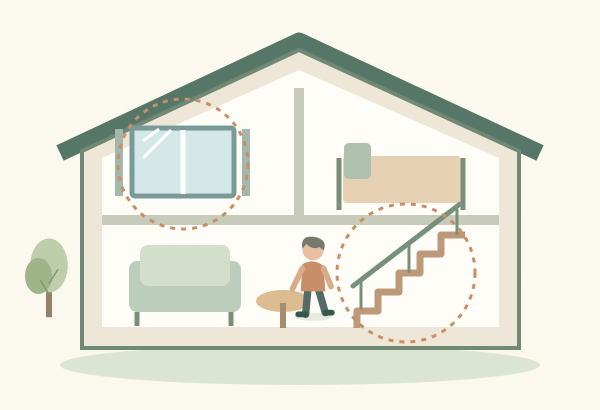
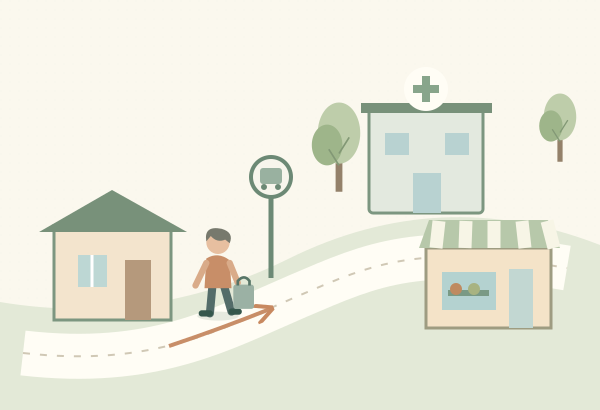
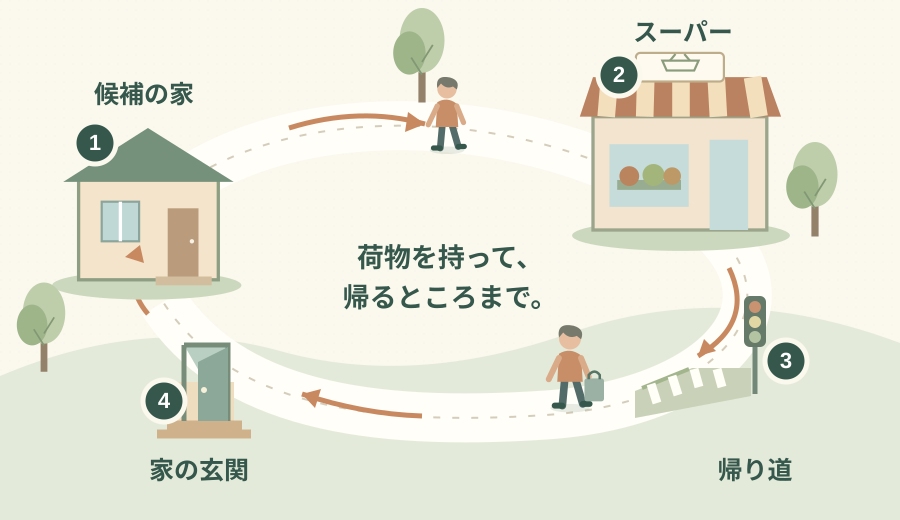

「この家を直して住み続けるか、便利な場所へ引っ越すか」。見積書と物件情報を行ったり来たりしても、なかなか決められないことがあります。
迷ったら、いちばん減らしたい不便と、これからも続けたい暮らしを一つずつ書いてみませんか。階段がつらいのか、買い物への坂道がつらいのか。その違いを出発点に、二つの案を同じ条件で比べる方法を紹介します。
減らしたい不便と、残したい暮らし。同じ基準で二つの案を比べよう
公開日：
 文｜エイスケ（住宅と教育の専門家）
文｜エイスケ（住宅と教育の専門家）

「この家を直して住み続けるか、便利な場所へ引っ越すか」。見積書と物件情報を行ったり来たりしても、なかなか決められないことがあります。
迷ったら、いちばん減らしたい不便と、これからも続けたい暮らしを一つずつ書いてみませんか。階段がつらいのか、買い物への坂道がつらいのか。その違いを出発点に、二つの案を同じ条件で比べる方法を紹介します。
「家が古い」だけでは、比べる範囲が広くなりがちです。最近、面倒だった一場面に置き換えてみてください。「寝室へ行く階段がつらい」「買い物の帰りに坂を上るのが大変」などです。
| いちばん減らしたい不便 | 先に確かめること |
|---|---|
| 寒さ、段差、水まわりの使いにくさ | 今の家の改修で、どこまで楽になるか |
| 坂道、通院の遠さ、車がない日の買い物 | 別の場所なら、毎日の移動がどう変わるか |
| 掃除や庭の手入れ、使わない部屋の管理 | 使う範囲を絞る改修と、小さな住まいへの転居の両方 |
次に、残したいものも一つ書きます。近所の友人、静かな庭、いつもの散歩、趣味の道具を広げる場所。便利になることと、気に入った暮らしが続くことを並べておくと、あとで迷ったときの基準になります。

窓や間取りを変えると、
いつもの動きは楽になる？
→今の家でできる改修を聞く

住む場所を変えると、
行き帰りの負担は減る？
→候補地で、いつもの用事を試す
同じ「困りごと」に、リフォームと住み替えの二つの案を。残したい暮らしも一緒に比べましょう。
調べる順番の目安です。改修できる範囲や建物の状態によって選択肢は変わります。
家族で意見が違うときは、まず一人ずつ書いてから見せ合ってみましょう。同じ家でも、負担に感じている用事や残したい楽しみは違うことがあります。
たとえば「寝室への階段がつらい」が一番なら、今の家では1階に寝室をつくる案、住み替えなら階段を使わず暮らせる住まいを比べます。両方とも同じ困りごとに答える案にすると、設備の多さや新しさだけに目を奪われにくくなります。
施工店へ、気になる場所の写真と、あれば図面・工事記録を見せます。「1階で寝起きしたい。そのための工事と、住み続けるために先に直したい傷みを分けて教えてください」と相談しましょう。
間取りの変更は構造や配管、マンションなら管理規約などによって範囲が変わります。全面改修だけでなく、使う場所を絞った案も聞くと、予算の使いどころを比べられます。
小さな家なら、持っていく家具の大きさを間取り図へ書き込みます。本を読む席、趣味の道具を置く場所、人を招く場所が取れるでしょうか。片付けが楽になる一方で、好きな時間が窮屈にならないかも確かめたいところです。
「近所の小さな住まいへ移る」なら、地域のつながりを残せることもあります。遠くへ引っ越す案だけに絞らず、いちばんの悩みを減らせる範囲で候補を探してみましょう。
「駅から徒歩○分」に加えて、自分がよく使う道を歩いてみましょう。おすすめは、候補の家からスーパーへ行き、帰り道まで確かめること。坂道、信号、休める場所、荷物を持ったときの負担が分かります。

図は確認する順番のイメージです。体調や天候に合わせ、無理のない範囲で確かめましょう。
中古住宅では、暮らしやすさとは別に建物の状態も調べます。既存住宅状況調査は、構造や雨水の浸入に関わる部分などの劣化を確認する調査です。耐震性が気になる場合は、耐震診断など別の確認も相談してください。
リフォームの工事代と住み替え先の物件価格だけでは、比較がそろいません。たとえば「これから10年」と期間を決め、初めに払うお金、毎月・毎年の支出、今後の補修を同じ範囲で並べます。10年は比較の例で、ご家族の予定に合わせてください。
| 比べるもの | 今の家を直す | 住み替える |
|---|---|---|
| 初めに | 工事、仮住まい、荷物の移動など | 購入・賃貸の初期費用、売買諸費用、引っ越し、必要な改修など |
| 毎月・毎年 | ローン、税、保険。マンションなら管理費・積立金など | 家賃・ローン、税、保険。マンションなら管理費・積立金など |
| この先 | 設備更新。戸建てなら屋根・外壁等の補修、マンションなら積立金の増額・一時金など | 設備更新。戸建てなら屋根・外壁等の補修、マンションなら積立金の増額・一時金など |
賃貸へ移る場合は、更新料や修繕費の負担区分も契約条件で確かめます。ローンを使う場合は、工事・購入代金の借入分と返済額を二重に足さないように整理します。今の家を売るなら、売却代金から残債や諸費用を引いて、手元に残る見込み額も確認しましょう。売れる前に次の支払いが来る場合の資金も、契約前に相談します。
| 確認したいこと | 今の家を直す案 | 住み替える案 |
|---|---|---|
| 一番の不便は減る？ | ＿＿ | ＿＿ |
| 残したい暮らしは続く？ | ＿＿ | ＿＿ |
| 必要なお金は？ | ＿＿ | ＿＿ |
| まだ分からないことは？ | ＿＿ | ＿＿ |
「1階に寝室をつくれるか未確認」「候補地の帰りのバスを見ていない」など、分からない欄はそのまま残します。次の相談や見学で、この空欄を一つ埋める。そこまで決めると、情報を集めるだけだった時間が、判断へつながります。
いちばん減らしたい不便：＿＿
これからも残したい暮らし：＿＿
「今の暮らしで楽にしたいことと、なくしたくない楽しみは何？」。二人の答えが違っても、それぞれを比較メモへ残すところから始められます。
暮らしの場面・構成の参考
建物調査・相談の確認先
動線まわりの改修(段差・階段・水まわり)、断熱改修、水まわり設備
部屋・建材・設備から機能を確かめる ↗関連記事
この記事を書いた人｜エイスケ
1986年生まれ。実家の工務店・不動産に10年間従事したのち、教育の世界へ。住宅と教育、両方の視点から「豊かな暮らし」をテーマに執筆します。※本コラムは筆者個人の見解・経験に基づくものです。最終的な判断は各分野の専門家にご相談ください。